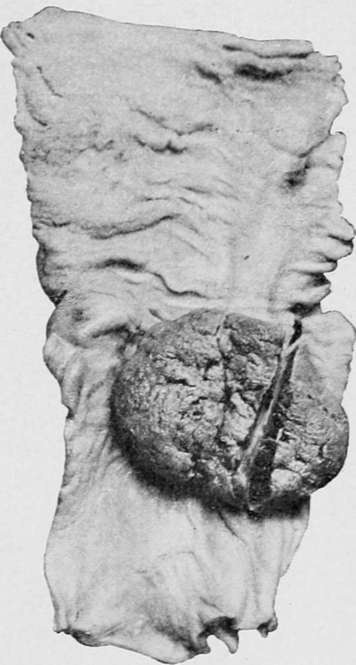

Other Points Of Distinction From Carcinoma
Description
This section is from the book "Cancer And Other Tumours Of The Stomach", by Samuel Fenwick. Also available from Amazon: Cancer and other tumours of the stomach.
Other Points Of Distinction From Carcinoma
Owing to the infrequent infection of the peritoneum there is usually a notable absence of the elongated and nodular epigastric tumour which is so often present in cancerous disease of the stomach from infiltration and adhesion of the great omentum. Again, in about 15 per cent, of the cases of round-cell sarcoma the spleen is so much enlarged as to project below the costal margin. This increase of size is due not to the existence of a morbid growth in its substance, but to congestion and hyperplasia of the splenic pulp, a condition which rarely occurs in carcinoma (see p. 74). Kundrat has observed enlargement of the tonsils, with occasional swelling and ulceration of the follicles of the tongue, and lays considerable stress upon their diagnostic significance ; but these phenomena are confined to the round-cell variety and are of rare occurrence. Perforation of the stomach, followed by general peritonitis, takes place in about 11 per cent., and is, consequently, more frequent than in carcinoma, owing probably to the greater tendency to softening of the growth and to the absence of protective adhesions. On the other hand, a perigastric abscess from this cause has not hitherto been observed. Death from haemorrhage has only once been recorded (Robert), and in one instance the disease gave rise to a gastro-colic fistula. True carcinoma was twice, found associated with round-cell sarcoma.
Fig. 56.- Secondary growth of melanotic sarcoma.
Secondary Sarcomata of the stomach are more common than secondary carcinomata, and are usually of the round-cell variety. They have been observed as the result of disease of the retro-peritoneal glands (Maier, Perry), caecuni (Beck), neck, pharynx, gums (Kundrat), rectum, and superior maxilla ; also in cases of general sarcomatosis (Malmsten, Carry).
When sarcoma spreads into the stomach by contiguity the pyloric region is often affected by a uniform infiltration, but when the original growth is remotely situated the metastases usually appear as rounded tumours or thick wheals situated in the submucous tissue. These deposits often soften and ulcerate, and may even undergo partial cicatrisation.
Etiology
The round-cell sarcoma appears to affect both sexes with equal frequency, and to develop at any age from the first to the eighth decade. There is, however, a distinct tendency for it to appear at an earlier period than carcinoma, since the mean age in twenty-nine cases was only thirty-four years. The fibro-sarcomata, on the other hand, have been met with far more frequently in women than in men (nearly 5 : 1), the average age at the time of death being fifty-one years. The only exception to this rule recorded up to the present time is the case of Finlayson's, where a male child died from a fibro-sarcoma of the stomach at the age of three and a half. In two instances where the solid tumour was a myo-sarcoma the patients were males about fifty years of age.
Bound-cell sarcoma, like carcinoma, is prone to follow a local injury and to develop in the scar of an old wound. In a case related by Brooks a soft growth originated in the cicatrix of a former bullet-wound of the lesser curvature, and in one which came under the authors' observation a large secondary melanotic tumour was found in the base of a simple chronic ulcer.
Symptoms
The general symptoms of sarcoma of the stomach are essentially the same as those that accompany carcinoma of the organ (p. 106). One of the earliest and most striking features of the complaint is progressive loss of flesh with failure of physical power. This is most conspicuous in young persons and in those cases where a round-cell growth has given rise to contraction of the pyloric orifice. When the neoplasm affects only a comparatively small area of the stomach, as in the spindle-cell and inyo-sarcomata, emaciation is chiefly observed in the later stages of the complaint or after ulceration has occurred. Anaemia is always present and gradually increases ; but if there is continued fever or repeated haemorrhages occur the pallor develops rapidly, and may rival that met with in pernicious anaemia. It is characterised by a great diminution both of haemoglobin and red corpuscles, and in one of the recorded cases the colouring matter amounted to only 15 per cent, of the normal a few days before death. Occasionally a slight degree of leucocytosis may be observed, but the increase of white corpuscles which normally occurs after meals (Digestion-leucocytosis) is usually absent. As a rule the appetite fails, especially in the round-cell growth, from the first, and there may be a special distaste for meat; but sometimes the desire for food continues unimpaired throughout (Rasch, Baldy), or anorexia manifests itself only during the last few weeks of life (Maass, Eleiner). Thirst varies with the severity of the anaemia and vomiting. Pyrexia is by no means uncommon in young persons and in those cases in which the neoplasm grows rapidly or undergoes degenerative changes ; it may therefore be present throughout the whole course of a round-cell sarcoma or in the later stages of the other varieties. This febrile reaction is usually continuous, but is seldom severe (99-102° F.), and often gives place to an abnormally low temperature for some days before death. Irregular attacks of pyrexia also accompany the development of perigastritis, pneumonia, pylephlebitis, and the formation of secondary growths in the lungs. Albuminuria occurs in about one-sixth of all cases, and is especially frequent in the round-cell sarcomata. It is usually associated with metastases in the kidneys. If vomiting is a prominent feature of the case, the bowels may be confined, but in the roundcell variety diarrhoea is more often encountered than constipation.
Local symptoms are present in almost every instance of round-cell sarcoma of the stomach, but in those varieties which are accompanied by the formation of a localised slowgrowing tumour the ordinary phenomena indicative of gastric disease may be entirely wanting. In the case related by Baldy the appetite continued good and there was no complaint either of pain or sickness, although the entire stomach was involved in an enormous tumour; while in another instance (Cantwell), where the growth weighed twelve pounds, the digestive functions remained unimpaired until the end. Bobert has also recorded one in which the first and only indication of an extensive growth was an attack of haematemesis.
Continue to:
- prev: The Myo-sareomata and Anglo-sarcoma
- Table of Contents
- next: Other Points Of Distinction From Carcinoma. Part 2